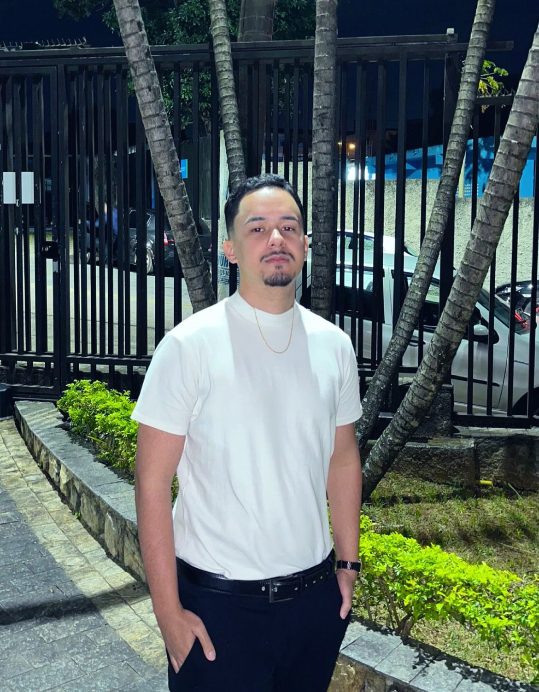

Olá! Sou Miguel Matos
Gostaria de me apresentar, meu nome é Miguel e tenho 21 anos. Atualmente estou cursando Análise e Desenvolvimento de Sistemas. No momento estou atuando como jovem aprendiz, na função de auxiliar administrativo na empresa Rede Cruzada.
Saiba Mais
